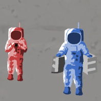
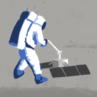

h:mm
- Mission highlights are color-coded to speaker and presented with hour:minute since hatch opening.
0:00
- The hatch is coming open.
- ...
- About ready to go down and get some Moon rock?
0:16
- I’m at the foot of the ladder. The LM footpads are only depressed in the surface about 1 or 2 inches, although the surface appears to be very, very fine grained, as you get close to it. It’s almost like a powder. Down there, it’s very fine.
- LM ("LEM") stands for Lunar Module.
- I’m going to step off the LM now.
- THAT'S ONE SMALL STEP FOR (A) MAN, ONE GIANT LEAP FOR MANKIND
- Hover over (or touch) illustrations.
- And the - the surface is fine and powdery. I can - I can pick it up loosely with my toe. It does adhere in fine layers like powdered charcoal to the sole and sides of my boots. I only go in a small fraction of an inch, maybe an eighth of an inch, but I can see the footprints of my boots and the treads in the fine, sandy particles.
0:27
- That looks beautiful from here, Neil.
- It has a stark beauty all its own. It’s like much of the high desert of the United States. It’s different but it’s very pretty out here.
0:34
- Okay. Now I want to back up and partially close the hatch.
- Making sure not to lock it on my way out.
- (Laughter) A pretty good thought.
- Most photos are of Buzz because Neil operated the Hasselblad camera for most of the moonwalk.
- That’s our home for the next couple of hours and we want to take good care of it.
0:35
- A little more. About another inch.
- THERE YOU GOT IT.
- That’s a good step. About a 3-footer.
- Beautiful view!
- Isn’t that something! Magnificent sight out here.
- Magnificent desolation.
0:49
- Buzz feeds TV cable to Neil.
- Now keep going. We've got a lot more.
- Okay.
- Getting a little harder to pull out, here.
- How far would you say I am, Buzz?
- Forty, 50 feet. Why don't you turn around and let them get a view from there and see what the field of view looks like?
0:51
- The capsule communicator (CAPCOM, in white text) was an astronaut at Mission Control in Houston.
- Neil, this is Houston. The field of view is okay. We'd like you to aim it a little bit more to the right. Over.
- Okay.
- Okay. That's all the cable we have. *** not going out. I'll start working on the solar wind - -
- A little bit too much to the right. Can you bring it back left about 4 or 5 Degrees?
- Okay. That looks good Neil.
- Okay, now. Do you think I ought to be farther away, or closer?
- Can't get too much further away.
- Let's try it like that for a while. I'll get a couple of panoramas with it, here.
0:54
- How's that for a final?
- For a final orientation, we'd like it to come left about 5 degrees. Over.
- Now back to the right about half as much.
- Okay?
- Okay. That looks good there, Neil.
- Okay.
- Okay. You can make a Mark, Houston. *** deployed.
- Roger. Solar wind.
- The Solar Wind Composition Experiment was an alumninum sheet that absorbed solar-wind particles. The foil was returned to Earth for laboratory analysis.
1:01
- Columbia, this is Houston. Reading you loud and clear. Over.
- Crewmember Michael Collins, orbiting the Moon in the Command Service Module, talks to Houston.
- Yes. Reading you loud and clear. How's it going?
- Roger. The EVA is progressing beautifully. I believe they are setting up the flag now.
- Great.
- I guess you're about the only person around that doesn't have TV coverage of the scene.
- That's all right. I don't mind a bit.
- How is the quality of the TV?
- Oh, it's beautiful, Mike. It really is.
- Oh, gee, that's great! Is the lighting half way decent?
- Yes, indeed. They've got the flag up now and you can see the stars and stripes on the lunar surface.
- Beautiful. Just beautiful.
1:24
- And right in this area, there are two craters. The one that's right in front of me now as I look off in about the eleven o'clock position from the spacecraft, about 30 to 35 feet ... There's several rocks and boulders 6 to 8 inches across.
- ...
- How's the bulk sample coming, Neil?
- Bulk sample is just being sealed.
01:50
- Have you got us a good area picked out?
- Yes. I think right out on that rise out there is probably as good as any.
- I'll probably stay on the high ground there and - -
- Watch it; the edge of that crater is - drops - -
- Yes. It drops off there, doesn't it? 
1:55
- Roger. I say I'm not having too much success in leveling the PSE experiment.
- The Passive Seismic Experiment (PSE) detected lunar "moonquakes" and provided information about the internal structure of the Moon.
- The laser reflector is installed and the bubble is leveled and the alignment appears to be good.
- Neil, this is Houston. Roger. Out.
- Hey, you want to take a look at this B B and see what you make out of it?
- "B B" stands for Ball Bearing.
- I find it pretty hard to get perfectly level, too.
- That B B likes the outside. It won't go on the inside.
- That little cup is convex now, instead of concave.
- I think you're right.
- Believe it is. 
- Houston, I don't think there's any hope for using this leveling device to come up with an accurate level. It looks to me as though the cup here that the B B is in is now convex instead of concave. Over.
- Roger, 11. Press on. If you think it looks level by eyeball, go ahead.
- Okay.
- ...
- Oh, shoot. Would you believe the ball is right in the middle now?
- Wonderful. Take a picture before it moves.
- Neil took the photo.
It turned out blurry.
2:04
- Neil runs 200 feet from the LM to look at Little West Crater.
- Buzz, this is Houston. You've got about 10 minutes left now prior to commencing your EVA termination activities. Over.
- Roger. I understand.
- Tranquility Base, this is Houston. The passive seismic experiment has been uncaged and we're observing short period oscillations in it. Over.
2:08
- Neil rejoins as Buzz collects two core samples, about 8 inches deep.
- I hope you're watching how hard I have to hit this into the ground, to the tune of about 5 inches, Houston.
- Roger.
- It almost looks wet.
- Got a sample.
- ...
- Neil, this is Houston. We'd like you all to get two core tubes and the solar wind experiment; two core tubes and the solar wind. Over.
2:12
- Neil, this is Houston. After you've got the core tubes and the solar wind, anything else that you can throw into the box would be acceptable.
- Righto.
- ...
- Buzz, this is Houston. It's about time for you to start your EVA closeout activities.
- Roger. That's in progress.
- Neil and Buzz, this is Houston. We'd like to remind you of the closeup camera magazine before you start up the ladder, Buzz.
2:30
- Neil, this is Houston. Did you get the Hasselblad magazine?
- Yes, I did. And we got about, I'd say, 20 pounds of carefully selected, if not documented, samples.
- Houston. Roger. Well done. Out.
2:32
- Buzz helps Neil into LM.
- Just keep your head down close. Now start arching your back. That's good. Plenty of room. Now, all right, arch your back a little, your head up against *** Roll right just a little bit. Head down. ... in good shape.
- Thank you. Am I bumping now?
- No, you're clear. You're rubbing up against me a little bit.
- Okay?
- All right. That's right. A bit to the left. Okay. Now move your foot, and I'll get the hatch.
- Okay.
- Okay. The hatch is closed and latched, and verified secure.
- End of Transcript Excerpt.